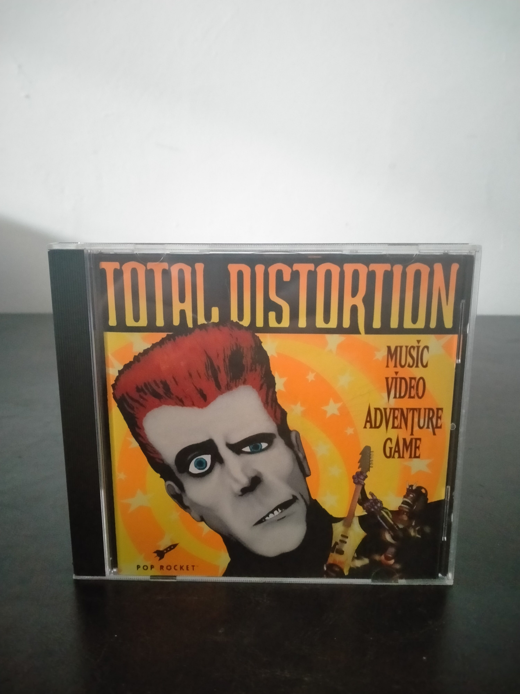

Ficha #000000
Total Distortion
Total Distortion es una aventura multimedia publicada en 1995 por Pop Rocket para ordenadores Windows y Macintosh. El jugador encarna a un productor de vídeos musicales que viaja a la Dimensión de la Distorsión para grabar criaturas, paisajes y actuaciones con las que crear videoclips y obtener beneficios. Su diseño combina exploración, conversaciones, gestión económica, composición audiovisual, combates musicales y abundantes secuencias de vídeo digitalizado. El título fue una producción especialmente representativa de la expansión del CD-ROM interactivo durante mediados de los años noventa y destacó por permitir editar vídeos mediante una extensa biblioteca de clips, efectos y canciones. Su estética surrealista, su humor y su célebre secuencia musical de derrota lo han convertido en una obra de culto dentro de la multimedia experimental para ordenadores personales.
- Formato
- Jewel Case
- Plataforma
- Win3.x
- Género
- Aventura gráfica Aventura multimedia Simulación empresarial Creación musical FMV
- Serie
- Todos Jewel Case
- Desarrollador
- Pop Rocket
- Distribuidor
- Pop Rocket
- EAN
- —
Contenido de la edición
- CD-ROM
- Libreto de instrucciones
- Caja jewel case
Preservación
- Protección
- No determinado
- Formato recomendado
- ISO
- Jugable en virtualización
- Sí
Preservar el CD-ROM mediante una imagen ISO verificada y digitalizar el libreto y las carátulas. Para su ejecución se recomienda un entorno virtualizado con Windows 3.1, controladores multimedia y una versión compatible de QuickTime para Windows; las aplicaciones de 16 bits no funcionan directamente en sistemas Windows modernos de 64 bits.